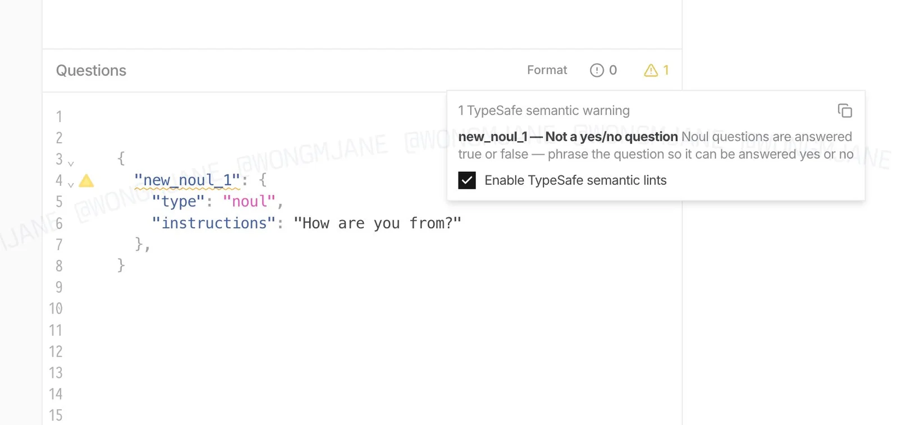

このUIがしていること
誤りを、実行の後ではなく、書いている最中に知らせる。型に合わない問いは、実行すれば、もっともらしい確率を返してしまう。その前に止める工夫である。
- 構文の誤り（エラー）と、意味の警告が、別々に数えられている。JSONとしては正しいが、問いとしては成り立たない、という区別が、右上の2つの数で見える。
- 警告は、何が問題かと、どう直すかの両方を、1つの文で伝える。
- 点検を止めるチェックが、警告と同じパネルにある。意味の点検は誤ることもあるため、開発者が自分の判断で外せる。
- 画像の問いは、英語としても崩れている。崩れた文のせいで警告が出たのか、はい・いいえの形でないせいなのかは、この1枚からは切り分けられない。直した後に警告が消える様子も、示されていない。
キャプチャ
{kind=link}

（原寸の画像を開く）見る箇所「Questions」のエディタ、4行目の警告の印と `"new_noul_1"` の波線、`"type": "noul"` と `"instructions": "How are you from?"`、右上の警告の数（1）、開いたパネルの「1 TypeSafe semantic warning」と説明文、「Enable TypeSafe semantic lints」のチェック
入力から画面の変化まで
-
判断への入力
開発者がエディタに書く、問いの定義。画像では、型がnoulで、指示文が「How are you from?」という問いが1つ書かれている。
-
Jevの判断
この事例で判断されるのは、アプリの入力ではなく、問いそのものである。問いが、はい・いいえで答えられる形になっているかが点検されている。点検の仕組みは、画像からは分からない。
-
結果がUIをどう変えるか
問いの名前に波線、行の左に警告の印、右上に警告の数。パネルには「new_noul_1 — Not a yes/no question」と、Noulの問いは真か偽かで答えられるので、はい・いいえで答えられる形に書き直すように、という説明が出る。チェックを外せば、この点検を止められる。
- 判断型の見立て
- 不明出典から判断できない
- 画像のnoulは点検される側の問いの型であり、点検そのものがどう行われるかは分からない。
Jevとの適合
Jevを使うアプリの品質は、問いの書き方に大きく左右される。問いの型と文が合っているかを先に点検する機能は、判断の誤りを、実行の前に減らす位置にある。ただし、これは観察者による先行の画像であり、TypeSafeが実際に提供するかどうか、どう動くかは、確かめられていない。
確認範囲と未確認事項
調査監査の評価はC（索引向け）。根拠は、作者本人ではなく、観察者が投稿した画像1枚である。TypeSafeが開発中の機能を先に見つけて紹介したもので、公開された成果物はなく、提供の時期も状態も分からない。問いを直して再実行する流れは示されていない。警告がどういう仕組みで出ているか、Jevの判断を使っているかどうかも、分からない。画像には投稿者の透かしが入っている。
- 確認済み投稿の画像1枚に見える内容（エディタ、波線と警告の印、問いの定義、警告の数、パネルの見出しと説明文、点検を有効にするチェック）
- 未検証機能の提供の時期と状態、点検の仕組み（Jevの判断を使うかどうかを含む）、直した後に警告が消える流れ、ほかの型（Choice、Score）への点検の有無、誤った警告の頻度、TypeSafeによる公式の説明
- 推定扱い質問型は不明として扱う。画像に出ているnoulは、点検される側の問いの型であり、点検そのものがどの質問型で行われるかは分からない
- 引用投稿の画像を引用（投稿者の透かしを含む）。権利は投稿者と、画面の提供元に帰属する